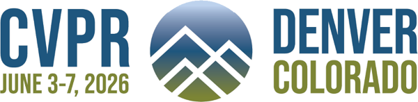
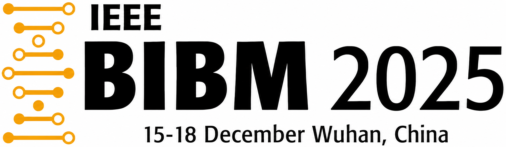
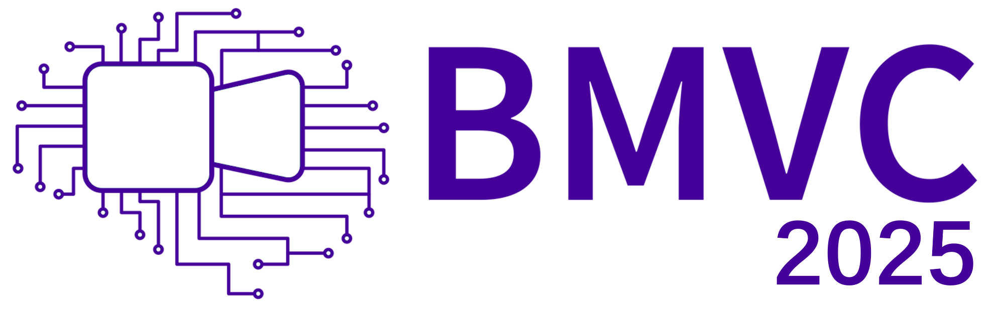
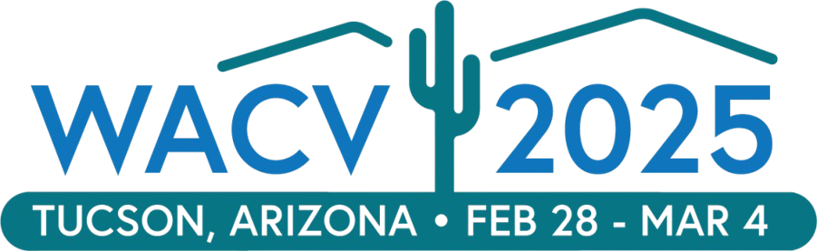

Yingtie Lei
M.S. Student, Department of Computer Science and Engineering, The Ohio State University
I am an M.S. student in CSE at The Ohio State University. I work with Prof. Wei-Lun (Harry) Chao and Prof. Mi Zhang. I am also a remote intern at the University of Macau, where I collaborate with Prof. Chi-Man Pun and Dr. Xuhang Chen. Before that, I received my B.E. in Intelligent Science and Technology from South China University of Technology.
My research interests include low-level vision and explainability in computer vision, with a broader focus on building more transparent and reliable visual learning systems. Recently, I have also been exploring how agentic systems can be integrated with a range of deep learning tasks.
Publications
* indicates equal contribution.
-
QuantVLA: Scale-Calibrated Post-Training Quantization for Vision-Language-Action Models

IEEE/CVF Conference on Computer Vision and Pattern Recognition (CVPR), 2026. -
FS-RWKV: Leveraging Frequency Spatial-Aware RWKV for 3T-to-7T MRI Translation

IEEE International Conference on Bioinformatics and Biomedicine (BIBM), 2025. -
CMAMRNet: A Contextual Mask-Aware Network Enhancing Mural Restoration Through Comprehensive Mask Guidance

The 36th British Machine Vision Conference (BMVC), 2025. -
High-Fidelity Document Stain Removal via A Large-Scale Real-World Dataset and A Memory-Augmented Transformer

IEEE/CVF Winter Conference on Applications of Computer Vision (WACV), 2025.